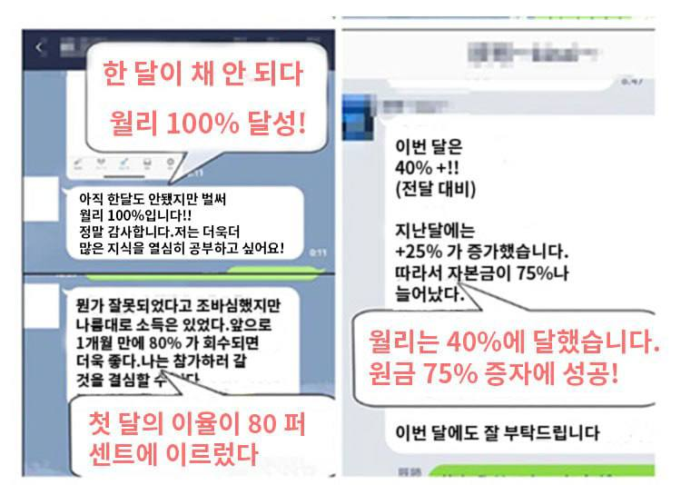

아래 버튼을 클릭하여 KakaoTalk에 추가하세요! "777"을 보내면 3월에 3가지의 급등주를 알려 드립니다! 처음 가입하는 100명의 투자자는 저희 스터디그룹방의 VIP 회원이 됩니다. 각 투자자에게는 1:1 상담 기회가 있습니다.
🔥 백지만 교수님의 투자 커뮤니티에 무료로 가입하시면 아래와 같이 주식 시장 동향 파악과 혜택을 얻을실 수 있습니다
1. 손실이 발생하거나 수익을 낼 수 없는 주식을 보유하고 있다면 백지만 교수님과 상담하여 해당 주식에 대한 최상의 솔루션을 무료로 얻을 수 있습니다.
2. 백지만 교수님은 매일 밤 스터디 그룹방에서 그날의 주식 시장에 대한 동향을 공유하고 다음 날 시장의 방향을 예측합니다.
3. 전문가 팀은 매주 급등할 것으로 예상되는 3가지 주식을 공유해드리며, 백지만 교수님의 매니저 KakaoTalk을 통해 무료로 상담 및 정보를 얻을 수 있습니다.
4. 무턱대고 주식을 선택해서 늘 손실만 입고 계신가요? 백지만 교수님은 20년간 시장에서 무패의 독점적인 주식과 선정기법을 스터디 그룹방에서 강의해드립니다.
🔥 수만 명의 학생들이 이벤트 기간동안 무료로 혜택을 받았으며 자리는 한정 되어 있습니다. 동 기간에는 1000명의 학생만 모집합니다. (상기 이벤트는 주식 계좌가 있고 손실이 발생한 회원님들에만 해당됩니다.)
금융계의 선두자 백지만
1976년 5월 18일 대한민국 서울에서 태어났습니다
고등학교 때부터 투자에 많은 관심을 갖게 되었습니다.그는 각종 투자 강의와 금융 강의에 적극적으로 참여하고 뛰어난 투자 재능을 보이며 선생님의 관심을 끌었고, 고등학교를 졸업하고 서울대 경제학과에 입학해 지금의 성과를 낼 수 있는 발판을 마련했습니다.
뛰어난 개인능력과 탁월한 통찰력, 예리한 시장감각으로 금융계에서 주목받는 떠오르는 스타가 되었습니다.2008년 리먼브러더스 사태 전까지 여러 유명 금융기관의 컨설턴트로 재직하무로 풍부한 업계 경험과 인맥을 쌓았습니다.이러한 귀중한 자원은 그로 하여금 시장의 동향을 미리 관찰하고 금융 위기의 위협을 예리하게 감지하며, 사려 깊고 과감한 행동으로 주요 결정을 제때 내릴 수 있게 해주었고, 그가 맡은 사업은 대부분의 위험을 회피했습니다.업계의 주목을 받으면서 그의 이름이 한국 금융계에 알려졌습니다.백지만 교수님은 정확한 시장 판단력과 탁월한 리스크 관리 능력으로 유명해졌으며, 많은 기업들의 타깃이 되었습니다.
명성이 높아짐에 따라 백지만 교수님은 국내외 여러 민간 투자 기관과 협력하기 시작했습니다.그의 전문 지식과 뛰어난 투자 성과는 이러한 기관들의 관심을 끌었고 서로 협력했습니다.이러한 투자 기관과의 협력을 통해 백지만 교수님은 더 많은 자원과 플랫폼을 얻었고 자신의 투자 전략과 개념을 더 잘 실현할 수 있었습니다.
2004년 백지만 교수님은 미국 금융분석가(CFA) 자격증을 딴 백지만 교수님은 공인금융분석사(Chartered Financial Analyst)의 약자로 증권투자와 경영계의 직업자격으로 투자금융계에서는 골드칼라로 통합니다.CFA 인증서로 투자은행, 증권사, 펀드, 외국기업, 상장기업, 은행금융기관, 세계 500대 기업 및 기타 기업에 지원할 수 있으며 국제 고급 금융분석, 투자 및 관리 업무에 종사하여 금융분석 분야의 전문 능력을 입증했습니다.
2012년부터 2015년까지 그는 Morgan Stanley 의 최고 투자 은행가 로 임명 되었습니다. 신규 SNS 툴을 통해 원래 투자 프로젝트가 필요한 기업, 기관투자자, 개인 투자 자에게 주식, 채권, 외환 거래 리스크에 대한 헤징 분석정보를 무료로 제공하기 시작합니다.
2018년 백지만 교수님은 팀을 이끌고 고객, 자산 관리, 금융, 채권, 주식, 외환 및 기타 금융 비즈니스를 위한 솔루션을 제공했습니다.
같은 해 부유층을 위한 투자 멘토링 서비스를 시작했습니다.그의 전문 지식과 성공 경험은 많은 재벌 그룹의 관심을 끌었고, 그의 경험과 통찰력으로 그의 고객이 보다 견고하고 지속 가능한 투자 수익을 달성할 수 있도록 도와 주었습니다.업계에서 좋은 평판을 얻었습니다.
★스탠포드 대학 동기들 대부분은 유럽과 미국의 주요 은행과 증권회사에서 근무하고 있으며, 축적된 인맥을 바탕으로 아시아 지역의 많은 유럽과 미국 민간 기업 프로젝트에 공동 지원을 달성했습니다.그는 한국뿐만 아니라 아시아 개발도 상국에서도 최고재무책임자(CFO)를 역임하며 홍콩, 싱가포르를 중심으로 아시아 기업의 주식 상장과 상장기업의 이익 성장 모멘텀에 기여해 왔다.!
★여러 정당의 지정학적 영향력과 연준 의장이 계속해서 금리 인상 가능성이 높다고 암시하면서 한국 경제가 다시 압박을 받고 있다. 작년에 공매도 금지가 다시 연장된다는 소식이 있는데, 동시에 중국 증시에서도 공매도가 엄격하게 단속되고 있습니다. 각종 징후에 따르면 개인 투자자들이 T 거래를 할 기회가 점점 줄어들고 있으며, 더 이상 아무런 이점도 없습니다. 이러한 상황에서 백지만 교수님은 자원을 재통합하고 새로운 거래 계획을 시작할 계획입니다.
이건 스터디 그룹방에 참여한 학생들의 피드백입니다
